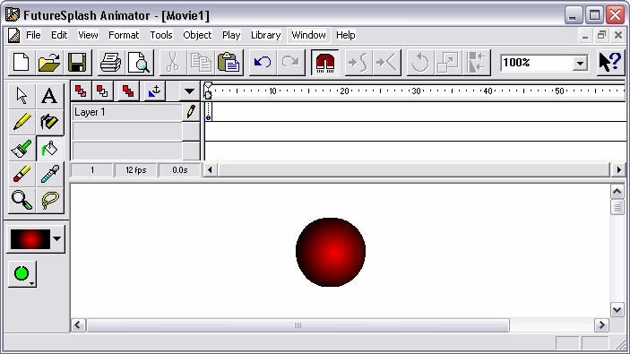

WebVR Woops!
Scene Background
THREE.Mirror
THREE.Sprite
THREE.LensFlare
onBeforeRender() to the rescue
WebGLRenderer
2013: 1 file
2015: 8 files
2017: 24 files
three.min.js
~130KB (gzipped)
ES2015 Classes
Rollup Tree shaking
And now
for something
completely different...

Flash 1996-2020
Thanks Jonathan Gay, Robert Tatsumi and Gary Grossman!